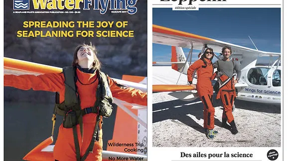
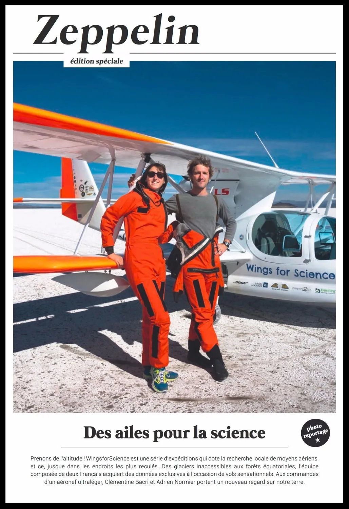
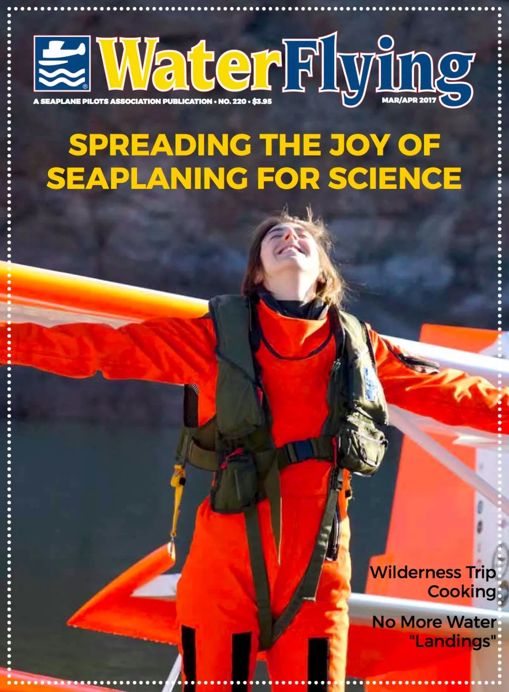

Woohoo ! Regardez ça ! Deux magazines racontent en détail et en images nos aventures :
Le premier (en langue française) édité par Zeppelin décrit notre mission argentine au-dessus des magnifiques glaciers du champ de glace sud de Patagonie, avec de très belles photos !

Le second magazine (en anglais) édité par la Seaplane Pilot Association présente nos vols en Amérique latine. Il est distribué sur tout le territoire américain, dans la boîte aux lettres de chacun des pilotes d'hydravion du pays.

C'est toujours une émotion particulière de voir notre histoire racontée ainsi par des journalistes passionnés. Merci à eux pour leur travail et leur enthousiasme !